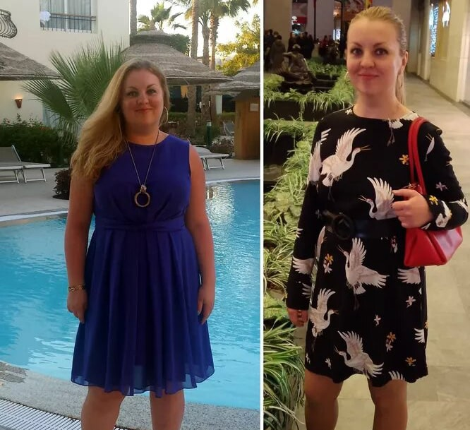
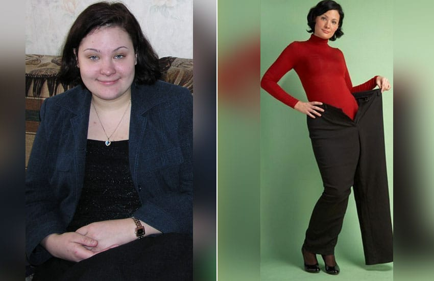
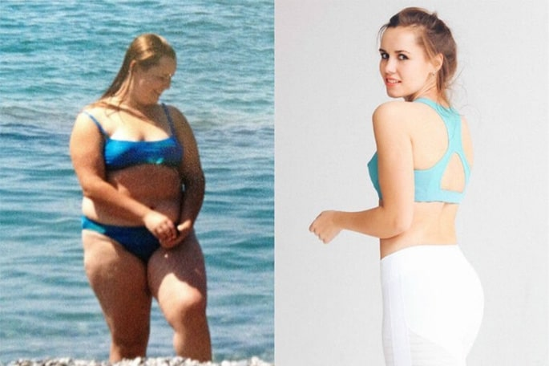
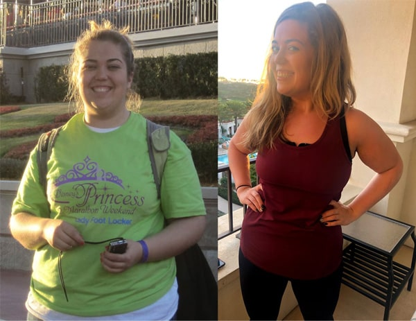

Моя реальная история похудения без вреда для здоровья и диет

Здравствуйте, читатели моего блога! Сегодня я хочу рассказать вам о способе похудения, которым воспользовалась сама лично и хотела бы посоветовать всем людям, страдающим от лишнего веса. К написанию этой статьи меня подтолкнуло то, что я ежедневно сталкиваюсь в коридорах своей клиники с людьми с лишним весом. Многие из них не знают, что делать, как питаться и к каким средствам можно обращаться, а к каким – нет.
И я таких людей прекрасно понимаю: сама раньше страдала. Я всегда была упитанной девочкой. В школе сталкивалась с буллингом даже от учителей, но в семье почему-то моему весу не уделяли должного внимания. Бабушка только умилялась моим пухлым щечкам. Дома у нас не было никакой культуры питания: мы ели всегда жареные и жирные продукты, так что ничего удивительного в моей полноте не было.
Когда я поступила в университет, то уехала от своей семьи, и мой рацион стал только хуже. Я покупала себе всякие вредные штуки, питалась снеками, всегда на ходу, всегда какие-то перекусы. Уже через полгода я перестала влезать в свои старые джинсы, они надевались только до колен. Но меня это не волновало: я училась, вокруг было много парней, и недостатка в их внимании я не испытывала.
На втором курсе универа я вышла замуж за красавца-парня, он учился на программиста, и его мои формы не смущали. С тех пор прошло уже много лет, и мы до сих пор вместе. Он всегда считал меня красивой, вне зависимости от моего веса.
Через пару лет я забеременела и родила, и в тот момент мой вес достиг максимума. Я постаралась привести себя в порядок после родов, но во время второй беременности набрала еще больше.
Я панически боялась весов, но это не мешало мне есть полноценный обед каждые три часа. После родов мне удалось скинуть несколько килограммов, но на большее не хватило силы воли. Я старалась готовить для себя отдельно, но все равно срывалась на то, что готовила для семьи. А иногда просто не хватало времени, чтобы приготовить что-то диетическое – все-таки с двумя детьми есть масса хлопот поважнее.
Поворотный момент случился тогда, когда мы решили устроить вечеринку с бывшими одноклассниками. Один из них, очень тактичный молодой человек (и я это говорю без сарказма) намекнул мне, что неплохо бы «позаниматься велосипедом».
В этот момент у меня как будто шоры с глаз упали. Я, конечно, и раньше понимала, что совсем не худая, но тут меня осенило просто: я разжирела. Не могу сказать, сколько я весила на тот момент. На весы я перестала вставать, когда они показали 90+ килограммов. Дальше взвешиваться было страшно.
Как я тогда только ни пыталась худеть! И да, не смотрите на то, что я врач. Врачи тоже иногда могут предпринимать глупые попытки похудеть. Самым утопичным эпизодом в похудении можно назвать тот момент, когда я пыталась похудеть на соках. Я просто ничего не ела, а пила свежевыжатые соки. У меня началась жуткая аллергия, но все же я сбросила 7 килограммов. Правда, после того, как закончила, набрала все 10.
Думаю, самая большая ошибка худеющих – это полагаться на собственную силу воли. Сила воли – это не бесконечный ресурс у каждого человека. Вы можете сколь угодно себя сдерживать, но, в конце концов, все равно сорветесь и съедите еще в 10 раз больше.
Как худеть правильно? С этим вопросом я обратилась к своим коллегам. И узнала о препарате под названием W-loss.
Первое, о чем меня спросил диетолог, было: «как вы думаете, почему вы не худеете?» Ответ прост: потому что я много ем. Ем неправильную пищу, не могу ограничить себя в ее потреблении, срываюсь, поэтому диеты мне не помогают.
Как оказалось, худеть можно и без диет, питаясь привычными для вас продуктами – просто нужно сократить порции. И сделать это можно с помощью W-loss.

Как работает W-loss?
W-loss – это пищевая добавка, направленная на снижение веса. Она работает сразу по нескольким направлениям:
- Уменьшает аппетит
Входящие в состав W-loss экстракты помогают снизить аппетит, а также тягу к «вредным» для фигуры продуктам – сладкому и жирному. Они блокируют рецепторы, отвечающие за восприятие этих вкусов.
- Разгоняет метаболизм
От скорости и стабильности обмена веществ зависит не только наш внешний вид, но и самочувствие, и состояние нашего здоровья. W-loss ускоряет химические реакции, происходящие в организме, усиливает выделение ферментов для переработки пищи и ускоряет ее выведение из организма. Таким образом, жир и углеводы, поступающие с пищей, выводятся из организма быстрее и не успевают превратиться в жировые отложения.
- Сжигает жир
Ну, и самое главное – W-loss помогает избавиться от старых жировых отложений. Усиливая клеточный метаболизм, он повышает энергозатраты, и организм начинает брать энергию из отложенных в жировой клетчатке запасов.
Мои впечатления о W-loss
Когда начала принимать W-loss, то заметила изменения примерно через неделю после начала курсового приема. Порции заметно сократились, причем мне больше не приходилось себя насиловать ради этого. Аппетит стал не таким зверским, меня не тянуло между приемами пищи съесть что-то эдакое вроде шоколадки.
Затем, через пару недель, я заметила, что бедра стали меньше, потому что старые штаны стали мне велики.
На то, чтобы полностью прийти в форму, у меня ушло всего месяц, я сбросила 23 килограмма!

Еще предлагаю ознакомиться с отзывами других похудевших с W-loss:

«Я то боролась, то пыталась смириться с лишним весом, но все было безрезультатно. Так было, пока мне в руки не попал W-loss. С ним я сбросила 40 килограммов за два месяца, мое тело полностью изменилось, и я наконец-то начала любить себя!»
Лилия, 34 года

«После потери отца я начала находить утешение в калорийной пище. Когда опомнилась, уже весила 100 килограммов и не имела ни малейшего представления, что с ними делать. На помощь пришел W-loss: минус 34 килограмма только благодаря ему».
Ольга, 26 лет

«Полной я была с самого детства. Я выросла в простой семье, поэтому питались мы не очень правильно, и я выросла вот такой пампушкой. О W-loss я узнала от подруги, мы вместе начали принимать его. Мой итог: 55 килограммов лишнего веса ушли».
Ирина, 28 лет
UPD: Много вопросов от читательниц: где заказать W-loss? Я брала на сайте производителя. Ссылку прикрепляю ниже.
Читайте больше историй похудевших с W-loss:

Средство, с которым худеют все

Лучший способ похудения, который я когда-либо пробовала: минус 40 килограммов и подтянутое тело

Легко сбросила 100 килограммов и начала новую жизнь. Моя методика похудения после 50 лет
Вы стали намного свежее выглядеть после похудения, вам очень идет!
Прекрасно выглядите! Девушки из отзывов – вообще браво! Многих просто не узнать.
Ой, как мне знакома эта проблема, когда не можешь отсидеть всю диету от начала и до конца. Постоянно срываюсь, ненавижу себя, ругаю! Плакать хочется от собственного бессилия. Спасибо за замечательный совет, оставила заявку на сайте W-loss.
Мне тоже W-loss посоветовал диетолог, сбросила на нем 15 килограммов после родов

Ура! Мне посылка пришла с W-loss! Наконец-то приступаю) Надеюсь, через месяц и я похвастаюсь вам результатами
А для парней подходит?
Подходит, почему нет? Я худел на этой штуке. Еще параллельно в зал пошел, подкачался) так что не бойся, это вещь!
Офигенные результаты!
Спасибо, что поделились такой полезной информацией! Так хочется похудеть…
И я на W-loss худела, рекомендую)